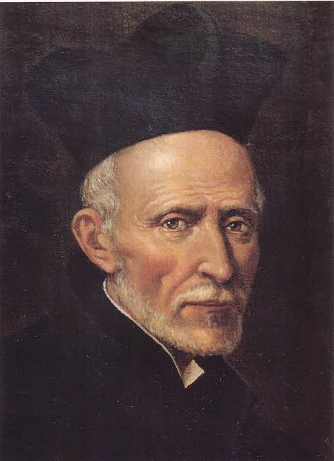

EQUIPO 01EXPLORÁ LOS PROYECTOS
Conocé cada historia
Cada equipo investigó un rostro de la santidad escolapia y creó su propio sitio web. Elegí un curso o un número de equipo para encontrar sus producciones.
52
proyectos
de estudiantes
de estudiantes
Mostrando todos los equipos
No encontramos proyectos
Probá cambiar los filtros o el término de búsqueda.